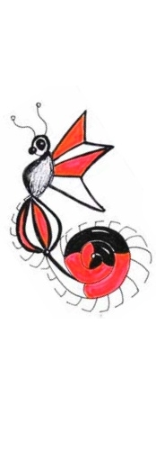

| | | | | | | | | | S k y e B r a n no n | | | | | | | | | | I recently told someone that I draw all the time, that it's a nervous habit. Although, I’m actually not nervous, so I suppose it’s just a habit. I’ve written (but not yet edited/published)two science-fiction novels, one serious and dystopic, the other silly and surreal. I’ve penned a play set in a series of Peace Corps parties (fia fias) going backward in succession. I’ve scribbled many stories, poems, silly songs, letters, etc. The general darkness of my writing surprises many who are familiar with my persistently cheery disposition. I was born in Norman, Oklahoma to parents who owned a skydiving facility for most of my life. I received a piece of paper from the University of Oklahoma, with the words Management Information Systems on it, the result of many computer systems related courses and a slew of art history and writing electives. In my 26th year, 2004, I moved to Samoa, a small island in the South Pacific, as a Peace Corps volunteer. By far my favorite souvenir from that special time is my partner Charlie, also a volunteer and the best guy I know. We moved to Upon the stars I wish to keep writing, editing, and publishing, to have a gallery show someday, to keep playing and working in earnest, and that me and mine are happy and well. |
 | |
  |
||